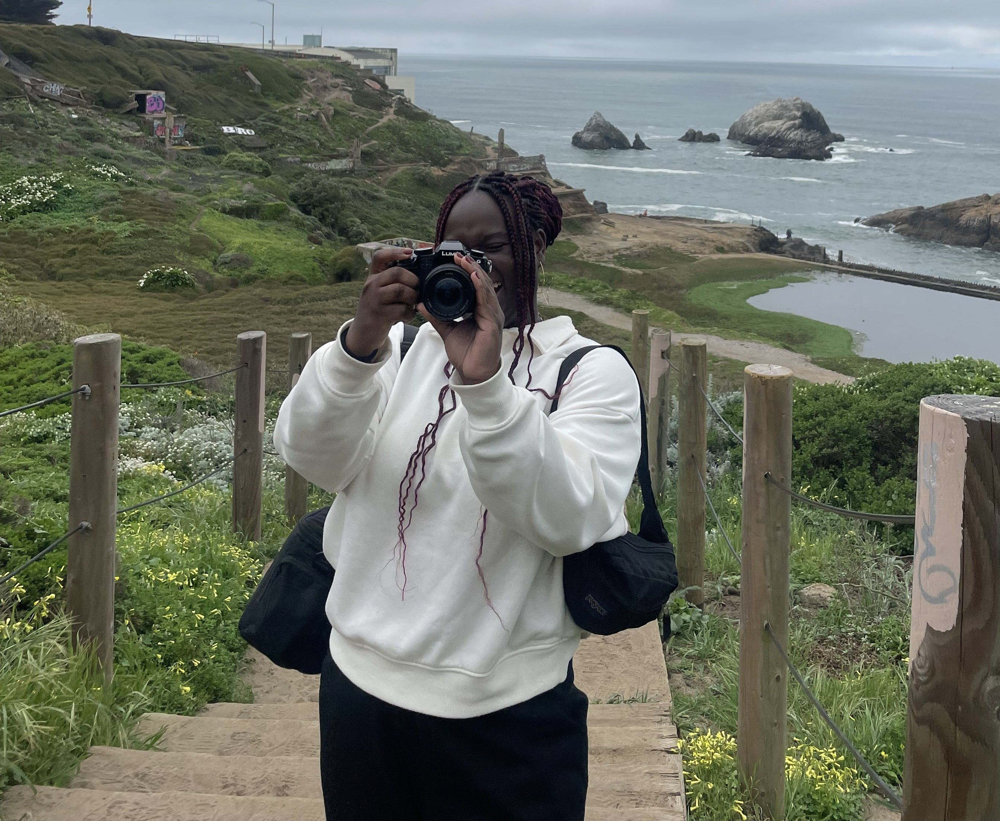

Hi, I'm Lydia.
At my core, I'm a storyteller — I believe every project, event, and brand has a story to tell, and I love finding the best way to tell it.
On paper: an MBA candidate. In practice: a passionate creative bringing ideas to life through storytelling. My work sits at the intersection of creativity and execution — spanning event management, marketing, communications, digital media, and program operations — giving me the ability to move seamlessly between big-picture vision and detailed execution.
I've supported large-scale initiatives from leadership programs and public-sector events to award ceremonies and marketing campaigns, managing everything from timelines, stakeholder engagement, and budgets to content creation, communications, and production. Whether I'm coordinating a high-visibility event, editing a video, designing a presentation, or building a tracker that keeps a project moving, I enjoy creating systems that make great work possible.
I taught myself Adobe Premiere Pro at twelve, when I fell in love with video editing making films for my school's volunteer club. That led to a curiosity for graphic design and photography, which I refined through my work with the African Development Initiative, AIESEC DC, and TEDxFoggyBottom.
Shoot me a message — I'm always looking for opportunities to create work that leaves a lasting impact on the people it serves. (Draft blended from your resume + LinkedIn — edit freely.)